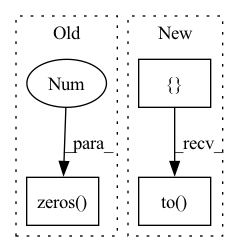

Pattern ID :1802

Before Change
module.register_buffer("idxs", idxs.to(module.weight.device))
// module.register_buffer("select_idxs", select_idxs.to(module.weight.device))
module.register_parameter("bf", torch.nn.Parameter(bias))
module.register_buffer("zeros", torch.zeros(1, 1, *shape[2:], dtype=bias.dtype, device=module.weight.device))
setattr(module, "zero_cache", module.zeros)
setattr(module, "idxs_cache", module.idxs)
After Change
def from_bn(module: nn.BatchNorm2d, idxs: torch.Tensor, bias, shape):
module.__class__ = BatchNormExpand
select_idxs = []
current = 0
for i in range(bias.shape[0]):
if i in idxs:
select_idxs.append(current)
current += 1
else:
select_idxs.append(module.weight.shape[0])
select_idxs = torch.tensor(select_idxs)
module.register_buffer("idxs", idxs.to(module.weight.device))
module.register_buffer("select_idxs", select_idxs.to(module.weight.device))
module.register_parameter("bf", torch.nn.Parameter(bias))
// module.register_buffer("zeros", torch.zeros(1, 1, *shape[2:], dtype=bias.dtype, device=module.weight.device))
In pattern: SUPERPATTERN
Frequency: 3
Non-data size: 3
Instances
Fragment ID: 8285878
Project Name: eidoslab/simplify
Commit Name: 20f2d560394960f91d131408660f14299acf9c1d
Time: 2021-07-08
Author: carlo.alberto.barbano@outlook.com
File Name: simplify/layers.py
M Class Name: BatchNormExpand
N Class Name: BatchNormExpand
M Method Name: from_bn(4)
N Method Name: from_bn(4)
M Parent Class: nn.BatchNorm2d
N Parent Class: nn.BatchNorm2d
M File Name: simplify/layers.py
N File Name: simplify/layers.py
M Start Line: 99
M End Line: 101
N Start Line: 87
N End Line: 98
'>
Before Change
module.register_buffer("idxs", idxs.to(module.weight.device))
// module.register_buffer("select_idxs", select_idxs.to(module.weight.device))
module.register_parameter("bf", torch.nn.Parameter(bias))
module.register_buffer("zeros", torch.zeros(1, *bias.shape, dtype=bias.dtype, device=module.weight.device))
setattr(module, "use_bf", bias.abs().sum() != 0)
setattr(module, "zero_cache", module.zeros)
After Change
def from_conv(module: nn.Conv2d, idxs: torch.Tensor, bias):
module.__class__ = ConvExpand
select_idxs = []
current = 0
for i in range(bias.shape[0]):
if i in idxs:
select_idxs.append(current)
current += 1
else:
select_idxs.append(module.weight.shape[0])
select_idxs = torch.tensor(select_idxs)
module.register_buffer("idxs", idxs.to(module.weight.device))
module.register_buffer("select_idxs", select_idxs.to(module.weight.device))
module.register_parameter("bf", torch.nn.Parameter(bias))
setattr(module, "use_bf", bias.abs().sum() != 0)
'>
Fragment ID: 8285877
Project Name: eidoslab/simplify
Commit Name: 20f2d560394960f91d131408660f14299acf9c1d
Time: 2021-07-08
Author: carlo.alberto.barbano@outlook.com
File Name: simplify/layers.py
M Class Name: ConvExpand
N Class Name: ConvExpand
M Method Name: from_conv(3)
N Method Name: from_conv(3)
M Parent Class: nn.Conv2d
N Parent Class: nn.Conv2d
M File Name: simplify/layers.py
N File Name: simplify/layers.py
M Start Line: 39
M End Line: 43
N Start Line: 26
N End Line: 37
'>
Before Change
out_cost = cost(predictions, targets, lengths)
assert torch.all(torch.eq(out_cost, 0))
predictions = torch.zeros(4, 10, 8)
out_cost = cost(predictions, targets, lengths)
assert torch.all(torch.eq(out_cost, 1))
After Change
.requires_grad_()
.log_softmax(dim=-1)
)
targets = torch.Tensor([[1, 2]]).to(device).int()
probs_length = torch.Tensor([1.0]).to(device)
target_length = torch.Tensor([1.0]).to(device)
out_cost = cost(log_probs, targets, [probs_length, target_length])
'>
Fragment ID: 8285874
Project Name: speechbrain/speechbrain
Commit Name: bd2a2aa5da0f2df26486cff5f602d1f8f97f57a0
Time: 2020-05-18
Author: a.heba@irit.fr
File Name: tests/unittests/test_losses.py
M Class Name: AnonimousClass
N Class Name: AnonimousClass
M Method Name: test_losses(0)
N Method Name: test_losses(0)
M Parent Class:
N Parent Class:
M File Name: tests/unittests/test_losses.py
N File Name: tests/unittests/test_losses.py
M Start Line: 28
M End Line: 35
N Start Line: 33
N End Line: 61